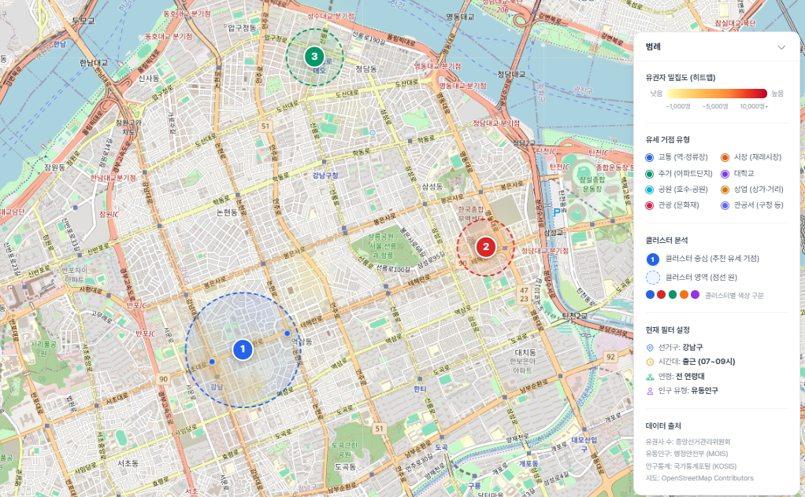

차량경로 최적화 분석 결과

유권자
185,000
최적 거점
12곳
효율 점수
81점
유권자 밀집 분석 결과

2026 지방선거 D-일
선거 유세,
감이 아니라
데이터로.
유권자 밀집도, 최적 경로, 비용 효율 —
AI가 분석하고, 당신의 캠프에 딱 맞는
선거 차량 전략을 설계합니다.
유권자
185,000
최적 거점
12곳
효율 점수
81점
유권자 밀집도, 최적 경로, 비용 효율 —
AI가 분석하고, 당신의 캠프에 딱 맞는
선거 차량 전략을 설계합니다.
520+
캠프 분석 완료
32%
평균 비용 절감
4.8/5.0
캠프 만족도
8종
선거 유형 지원
경험과 감에 의존한 유세 경로 설정
유권자가 없는 시간·장소에 차량 배치
경쟁 후보와 겹치는 유세 동선
법정 한도 대비 과다한 차량 운영 비용
일렉션맵AI는 이 모든 과정을 데이터로 바꿉니다.
AI가 분석한 6가지 핵심 솔루션
선거 유형과 선거구를 선택하면
AI가 데이터 분석을 시작합니다
유권자 히트맵, 최적 경로, 경쟁 분석을
지도 위에서 한눈에 확인하세요
최적 차량 배치, 비용 예측, 일정 계획이
포함된 AI 리포트를 받아보세요
지금 시작하면 첫 선거구 분석이 무료입니다.
데이터가 보여주는 최적의 유세 전략을 직접 확인해 보세요.
로그인 없이 모든 분석 기능을 사용해 보세요